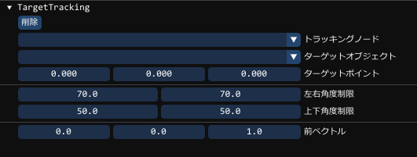

ComponentTargetTrackingとは
ComponentModelのモデルのボーンのMatrix(位置・回転・スケール)を変化させますTargetTrackingを利用する場合、そのオーナー(Object)は、必ずComponentModelを持っている必要があります
BP2022 は、直接マトリクスを差し替える形でTrackingを行っていたため、
現状のモデルの向きなどを常に考慮する必要がありました。
BP2023 では、差分を使う形で常に現状のアニメーション状態に対して、どれだけ回転しているか、
というものをもって処理するように変更しています。これによりモデルの向きは、
どの方向の向きのモデルか、というものだけ、設定するだけでよくなりました。
また、徐々にそちらに向けるなどの機能が追加されています
利用方法として
GUIには、次のような設定項目があります。

| トラッキングノード | 追従するノード(回転などを行うノード) |
|---|---|
| ターゲットオブジェクト | 追跡したいオブジェクト(これが存在する場合はターゲットポイントは出ない) |
| ターゲットポイント | 追跡したい場所(ターゲットオブジェクトがある場合は使用できない) |
| 左右角度制限 | 通常の状態よりどれだけ回転を許容するか(首が後ろに向いたりしないようにする) |
| 上下角度制限 | 通常の状態よりどれだけ回転を許容するか(首だけが真上を向いたりしないようにする) |
| 前ベクトル | モデルの前ベクトルを設定しておきます |
ComponentTargetTrackingの使用方法
コンポーネントの作成方法の例
auto変数trackingなどにとらえ、その関数内にて設定を行うことができます。
auto tracking = obj->AddComponent<ComponentTracking>();
コンポーネントの取得方法
if (auto tracking = obj->GetComponent<ComponentTracking>())
{
// objにTargetTrackingコンポーネントがある場合はこのスコープでtrackingとして使用することができます
}
トラッキングノードの設定
// "mixamorig:Neck"というノードをトラッキングノードとする
tracking->SetTrackingNode( "mixamorig:Neck" );
// id番号のノードをトラッキングノードとする
tracking->SetTrackingNode( id );
ターゲットオブジェクトの設定
tracking->SetTargetObjectPtr( target_object ); // target_objectをターゲットにします。
tracking->SetTargetObjectPtr( "enemy_01" ); // オブジェクトの名前でもターゲットにできます。
ターゲットのオブジェクトの取得
auto obj = tracking->GetTargetObjectPtr(); // objにターゲットが入ります。
ターゲットポイントの設定
tracking->SetTargetPoint( { 0, 50, 0 } ); // {0,50,0}の位置に トラッキングノードを向ける
トラッキング制限の設定
// 上下角度は90度が限界です
tracking->SetTrackingLimitLeftRight( { 30, 40 } ); // 左:30度 右:40度 で回転制限をつけます
tracking->SetTrackingLimitUpDown( { 30, 10 } ); // 上:30度 下:10度 で回転制限をつけます
トラッキングのフレーム単位での制限を設定
フレームは、60FPSを基準としています
tracking->SetTrackingFrameLimit( 3 ); // 上下、左右個別で、一度に3度以上動かなくする
モデルの前ベクトルの設定
トラッキングするモデルの前ベクトルを設定します
tracking->SetTrackingFrontVector( { 0, 0, 1 } ); // Z軸プラスを前にするモデルを使用します